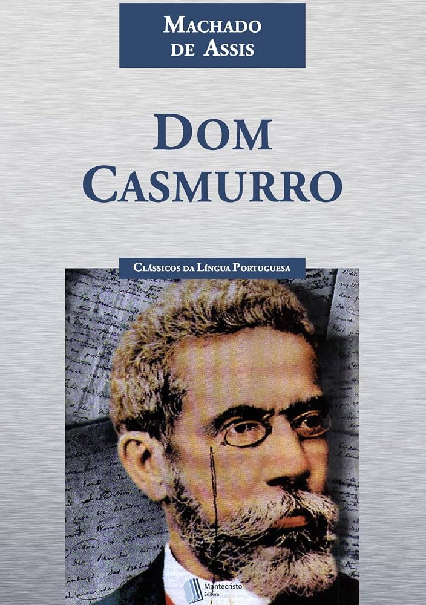

1984 – George Orwell
Publicada em 1949, esta obra-prima da distopia introduziu o conceito do "Grande Irmão" (Big Brother) e a assustadora manipulação da verdade pelo Estado. Um livro extremamente atual que nos faz refletir sobre vigilância em massa, liberdade de expressão e os perigos do autoritarismo na sociedade moderna.

O Senhor dos Anéis – J.R.R. Tolkien
Considerada a maior obra de alta fantasia de todos os tempos, a trilogia de Tolkien reconstrói a Terra Média com uma riqueza de detalhes impressionante, incluindo mitologias e idiomas próprios. A jornada de Frodo Bolseiro para destruir o Anel representa uma luta épica sobre amizade, sacrifício e a coragem dos pequenos.

Dom Casmurro – Machado de Assis
Um dos maiores romances da literatura brasileira e mundial, a história é narrada pelo enigmático Bento Santiago, o Bentinho. Através de suas memórias obsessivas e ciumentas sobre sua esposa, Capitu, Machado de Assis constrói uma narrativa psicológica genial que deixa no ar a famosa dúvida que atravessa gerações de leitores.

A Rosa do Povo – Carlos Drummond de Andrade
Lançada em 1945, esta é considerada a obra mais madura e engajada do poeta mineiro. Composta por 55 poemas escritos durante a Segunda Guerra Mundial, Drummond deixa de lado o isolamento para cantar as dores, as esperanças e o cotidiano do "homem do povo", imortalizando a força da poesia como uma arma de sensibilidade contra as injustiças do mundo.